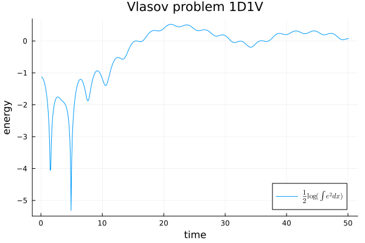

using VlasovSolvers
using Plots
using LaTeXStrings
dev = CPU() # device
stepper = StrangSplitting() # timestepper
dt = 0.1 # timestep
nsteps = 1000 # total number of time-steps
α = 0.03
kx = 0.3
n1, n2 = 32, 64
x1min, x1max = 0.0, 2π / kx
x2min, x2max = -9., 9.
mesh1 = OneDGrid(dev, n1, x1min, x1max)
mesh2 = OneDGrid(dev, n2, x2min, x2max)
f = DistributionFunction( mesh1, mesh2 )
for (i,x) in enumerate(mesh1.points), (j,v) in enumerate(mesh2.points)
f.values[i,j] = (1.0+α*cos(kx*x)) / (10*sqrt(2π)) * (9*exp(-0.5*v^2)+2*exp(-2*(v-4.5)^2))
end
nsteps = 500
t = range(0.0, stop=50.0, length=nsteps)
dt = t[2]
prob = VlasovProblem(f, BSLSpline(5), dev)
sol = solve(prob, stepper, dt, nsteps )
plot(sol, label=L"\frac{1}{2} \log(\int e^2dx)")
